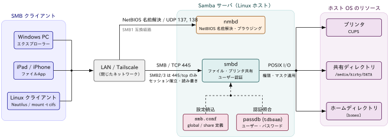

Sambaでできること
定義 1 Samba
- LinuxホストをMicrosoftネットワークに参加できるようにするSMBプロとコロルを用いたソフトウェア
- SMB = Server Message Block
- SMB2/3プロトコルは445/tcpのみを使用
実現できること
| カテゴリ | 機能 | 説明 |
|---|---|---|
| ファイル共有 | ディレクトリ共有 | Windows から Linux/Unix のディレクトリにアクセス可能．読み取り専用／書き込み可の権限設定が可能・ |
| ファイルアクセス制御 | ユーザー・グループごとのアクセス権を設定可能． | |
| プリンタ共有 | プリンタ共有 | Linux/Unix に接続されたプリンタを Windows から利用可能． |
| プリンタドライバーの配布 | Samba サーバに Windows 用プリンタドライバーを置いておくと，クライアント側で共有プリンタに接続するだけで自動インストールできる | |
| ホームディレクトリ提供 | ユーザーごとのホームディレクトリ | Windows ユーザーごとに自動マウント可能． |
| アクセスログ・監査 | ログ取得 | どのユーザーがいつアクセスしたかのログを取得可能．監査やセキュリティ対策に活用可能． |
Sambaの仕組み
Sambaは，SMBプロトコルを話す smbd と，NetBIOS名前解決を担う nmbd の2つのデーモンでLinuxホストをファイルサーバー化します． クライアントからの要求は smb.conf の共有定義とpassdbの認証情報に照らして検証され， 通過したものだけがホストOSのディレクトリ・プリンタへのPOSIX I/Oに変換されます．

Samba と TCP/IP
SMBはTCP上で動くアプリケーション層のプロトコルで，smbd は 445/tcp をlistenするごく普通のTCPサーバーです． 実際に ss で待ち受けソケットを確認すると，smbd が445番ポートで接続を待っていることがわかります．
% sudo ss -tlnp | grep smbd
LISTEN 0 50 0.0.0.0:445 0.0.0.0:* users:(("smbd",pid=293976,fd=39))
LISTEN 0 50 [::]:445 [::]:* users:(("smbd",pid=293976,fd=38)) ss の各カラムは左から，
- ソケットの状態(
LISTEN) - 受信キューの滞留数(
0) - バックログの上限(
50)， - ローカルのアドレス:ポート
- リモートのアドレス:ポート
- そのソケットを保持しているプロセス
を表示しています．0.0.0.0:445 と [::]:445 の2行が出ているのは，同一の smbd プロセス(pid=293976)がIPv4用とIPv6用に 別々のソケット(fd=39 / fd=38)を開いているためで，デーモンが2つ起動しているわけではありません．
0.0.0.0 / [::] はワイルドカードアドレスを意味し，ホストが持つすべてのNIC宛の接続を受け付ける状態を表します．
Sambaユーザー認証
security: どこで認証するかpassdb backend: 認証情報をどこに保存するか
の2つのパラメータで，Sambaの認証まわりの挙動はほぼ決まります．どちらも，後述する [global] セクションに記述します．
[global]
security = user
passdb backend = tdbsamsecurity の設定値
security はクライアントの認証をどこで行うかを指定するパラメータです． Samba 4以降では share (認証なし共有)が廃止され，実質的に user / domain / ads の3択になっています．
| 設定値 | 説明 |
|---|---|
user |
デフォルト値．Samba サーバー自身が持つ認証DB(passdb backend)でユーザー名とパスワードを検証する．単体のファイルサーバー(standalone server)ならこれを使う |
domain |
ドメインコントローラーによる認証設定 |
ads |
Active Directory ドメインのメンバーサーバーとして参加し，Kerberos経由でADに認証を委譲する設定 |
share |
共有単位でパスワードを持ち，ユーザー認証を行わない旧方式．Samba 4.0で廃止済みのため使用不可．匿名共有をしたい場合は security = user + guest ok = yes で代替する |
passdb backend の設定値
passdb backend は，Sambaユーザーのアカウント情報(ユーザー名・NTハッシュ・SIDなど)をどこに保存するかを指定するパラメータです． security = user のときにこのDBが参照されます．
| 設定値 | 説明 |
|---|---|
tdbsam |
デフォルト値．TDB(Trivial Database)形式のローカルファイル /var/lib/samba/private/passdb.tdb に保存する．設定不要で使え，数百ユーザー規模までのスタンドアロン構成に適する |
ldapsam |
LDAPサーバー(OpenLDAPなど)にアカウント情報を保存する．ldapsam:ldap://ldap.example.com のようにURIを付けて指定する．複数のSambaサーバーでアカウントを共有したい場合に使う |
smbpasswd |
旧来のテキストファイル /etc/samba/smbpasswd に保存する形式．非推奨で，SIDやアカウントポリシーなどの情報を保持できない．旧環境からの移行時にのみ登場する |
passdb backendに登録されるのはSambaのパスワードのみ- Linuxのパスワード(
/etc/shadow)とは別物です． - Sambaユーザーは同名のLinuxユーザーが存在していることが前提(ファイルの所有権をUIDで管理するため)
したがって新規ユーザーを追加する場合は，Linuxユーザーの作成 → smbpasswd -a の順で登録します．
# 1. Linuxユーザーを作成 (ログイン不要ならシェルを無効化しておく)
% sudo useradd -M -s /usr/sbin/nologin sambauser
# 2. Sambaの認証DB (passdb backend) に登録
% sudo smbpasswd -a sambauser
New SMB password:
Retype new SMB password:
Added user sambauser.
# 3. 登録済みユーザーの確認
% sudo pdbedit -L -vunix password sync = yesを設定しておくと，Samba側のパスワード変更がpasswd programを通じてLinux側にも反映される- ファイル共有用途がメインであるならば特段，必要はないと感じる
Sambaのインストール
apt経由で samba パッケージをインストールします
# install
% sudo apt install -y samba
# version check
% samba --version
Version 4.19.5-Ubuntusamba は，ファイルサーバー，プリントサーバー，ユーザー管理を担うsmbdデーモン，名前解決を担うnmbdデーモンから構成されます． ファイヤーウォールを使っている場合は，Sambaを利用できるように次のような設定をします
% sudo ufw allow samba
Rule added
Rule added (v6)tailscaleを導入している場合は，tailscaleについてのファイヤーウォールを実施するだけでOKです．
% sudo ufw allow in on tailscale0- Samba サーバーは基本的に LAN 内での運用を前提(=企業や家庭内ネットワークなど，閉じたネットワークでの利用が基本)
- インターネットサーバー上での動作は推奨されない
- ADが使えるとはいえ，Windows Serverで実現できるすべての機能が実装されているわけではない
各デーモンに対応する systemctl サービス
| 構成要素 | 担当機能 | systemctl サービス名 |
|---|---|---|
| smbd | ファイル共有・プリント共有・ユーザー認証 | smbd |
| nmbd | 名前解決 | nmbd |
| samba-ad-dc | Samba AD DC サービス（AD ドメインコントローラ運用時） | samba-ad-dc |
Sambaの設定
- Sambaの主な設定は
/etc/samba/smb.confに記述 [セクション名]で始まるブロックごとにルールを設定していく．セクション名がそのまま共有名（share name）になる．クライアントから見えるのはこの名前．/etc/samba/smb.confを編集するときはsudo cp -a smb.conf smb.conf.defaultなり.bak拡張子を用いてバックアップをしておくと安全です．
smb.conf Syntax
parameter = value
# commentout line begins with # or ;予約セクション
| セクション | 役割 |
|---|---|
[global] |
サーバ全体の動作を決める唯一の特別なセクション。ここに書いた値は以降のすべての共有セクションのデフォルト値としても継承される（workgroup、interfaces、server min protocol など） |
[homes] |
各ユーザーのホームディレクトリの共有に関するパラメータ設定セクション |
[printers] |
CUPS などのプリンタスプーラと連携し、登録済みプリンタを自動的に共有・公開するための設定セクション．ファイルサーバ用途では不要 |
[print$] |
Windows クライアントに配布するプリンタドライバ設定セクション プリンタ共有を使わないなら不要 |
globalの設定項目
| 項目 | 説明 | 例 |
|---|---|---|
workgroup |
Windows ネットワーク上のワークグループ名を指定 | WORKGROUP |
server string |
サーバーの説明文（ネットワークブラウザに表示される） | Samba Server |
log file |
ログファイルの出力場所 | /var/log/samba/log.%m |
max log size |
ログファイルの最大サイズ (KB) | 1000 |
server role |
サーバーの役割．ファイルサーバーとして使う場合はstandalone server |
standalone server / member server / active directory domain controller |
passdb backend |
ユーザー認証DBの指定 | tdbsam / ldapsam |
unix password sync |
Sambaユーザーアカウントのpassword変更をLinuxユーザーアカウントのpasswordにも反映 | yes / no |
passwd program |
Samba がパスワード変更要求を受けた際に，実行するコマンドを指定する | /usr/bin/passwd %u |
passwd chat |
passwd program とやり取りする際の「対話プロンプトと応答パターン」を定義する |
*New*password* %n\n *Retype*new*password* %n\n *password*updated*successfully* |
pam password change |
有効にすると，password変更にpasswd program に指定したコマンドではなくPAMを利用する |
yes / no |
共有セクションの設定項目
| 項目 | 説明 | 例 |
|---|---|---|
path |
実際に公開するディレクトリの絶対パス | /srv/samba/public |
comment |
ネットワークブラウザに表示される説明文 | Public Share |
browseable |
ネットワークブラウザに表示するか | yes / no |
read only |
読み取り専用にするか | yes / no |
writable |
read only の逆指定（同義語） |
yes |
guest ok |
認証なしでアクセスできるか | yes / no |
valid users |
アクセスを許可するユーザー/グループ | %S とすればhome directoryのユーザーのみが自身のhome directoryにアクセスできる |
invalid users |
アクセスを拒否するユーザー/グループ | @nogroup user2 |
create mask |
新規ファイル作成時のパーミッションマスク | 0644 |
directory mask |
新規ディレクトリ作成時のパーミッションマスク | 0755 |
public |
guest ok の別名 |
yes / no |
locking |
ファイルロックの使用有無 | yes |
printable |
プリンタ共有として扱うか | no（通常のフォルダ共有なら） |
構文チェック
testparm コマンドを用いることでconfigファイルの構文チェックをすることができます
% testparm -s
Load smb config files from /etc/samba/smb.conf
Loaded services file OK.
...| オプション | 説明 | 例 / 補足 |
|---|---|---|
-s |
短い形式で表示（冗長な情報を省略し，主要な設定のみを出力） | testparm -s |
-v |
詳細表示（全設定，コメントやデフォルト値も含む） | testparm -v |
共有の作成
iPadからtailscale経由でアクセス可能な共有ディレクトリを指定したいと思います．
[server-hdd]
comment = 2TB sized hdd
path = /media/kirby/DATA/
browsable = yes
writable = yes
guest ok = no
printable = no
valid users = dedede kirbyと指定すると server-hdd を共有名として path を公開することができます．設定が完了したら
% sudo systemctl restart smbdを実施します．
iPadからのアクセス設定
Tailscaleをつないでいるならば自動的に名前解決してくれます．手順は以下です．
- Tailscale管理画面から共有設定したサーバーの名前を調べる(例:
dsserver) ファイルから右上の３点マークの設定を開く- 「サーバーへ接続」を開き以下の書式で入力する
smb://dsserver/その後，Sambaユーザー名とSambaパスワード等が要求されますが，それは smb.conf の設定に合わせて入力してください．
only readable errorが出る場合
原因としてストーレージのフォーマットにiOSが対応していないことが考えられます． iOSの標準ファイルシステムサポートは APFS / HFS+ / FAT32 / exFAT に限られ，NTFSは基本的には読み取り専用になってしまいます．
マウントしてもread-onlyの場合は，ファイルシステムのフォーマットを確認してみてください． もし，NTFSであるならば中身を退避して，サーバー側でフォーマットを以下のコマンドで書き換えてしまいます
$ sudo mkfs.exfat -n <任意の名前> /dev/sda1その後，サーバー側で再度以下のコマンドでmountを実施し，sambaの設定をすればOKです
sudo mount -t exfat -o uid=1000,gid=1000,fmask=000,dmask=000 /dev/sda1 <mount-point-path>- モバイルを含む複数のOSでreadable and writableで使用するなら
exFATのほうが取り回しは効きます - 一方，ジャーナル機能やファイル圧縮，暗号化への対応はされていないので，セキュリティ面を重視するならば利用は控えたほうが良いです
NautilusでSamba共有フォルダをmountする
基本的にはiPadでの設定と同じ手順です
section
Tailscaleをつないでいるならば自動的に名前解決してくれます．手順は以下です．
- Tailscale管理画面から共有設定したサーバーの名前を調べる(例:
dsserver) - Nautilusを開く
+ Other Locationsをクリックし，以下の書式でconnection設定を行う
smb://dsserver/その後，Sambaユーザー名とSambaパスワード等が要求されますが，それは smb.conf の設定に合わせて入力します．
クライアント接続情報の確認
Sambaサーバに対するアクセス状況は以下のように確認できます．
$ sudo smbstatus
Samba version 4.19.5-Ubuntu
PID Username Group Machine Protocol Version Encryption Signing
----------------------------------------------------------------------------------------------------------------------------------------
1018393 kirby kirby 100.x.x.x (ipv4:100.x.x.x:60008) SMB3_11 - partial(AES-128-GMAC)
1011489 dedede dedede 100.x.x.x (ipv4:100.x.x.x:40280) SMB3_11 - partial(AES-128-GMAC)
1009585 nobody nogroup 100.x.x.x (ipv4:100.x.x.x:30585) SMB3_11 - -
Service pid Machine Connected at Encryption Signing
---------------------------------------------------------------------------------------------
IPC$ 1009585 100.x.x.x Wed Sep 9 08:33:26 PM 2026 JST - -
server-hdd 1018393 100.x.x.x Wed Sep 9 08:47:25 PM 2026 JST - -
server-hdd 1011489 100.x.x.x Wed Sep 9 08:39:04 PM 2026 JST - -
Locked files:
Pid User(ID) DenyMode Access R/W Oplock SharePath Name Time
--------------------------------------------------------------------------------------------------
1011489 1003 DENY_NONE 0x120089 RDONLY NONE /media/kirby/DATA/ sambafs/xxxxx/DiNardoetal.pdf Wed Sep 9 20:52:08 2026IPC$ とは？
- Inter Process Communication の略
- 匿名ユーザーが共有情報を取得するために必要なセクション